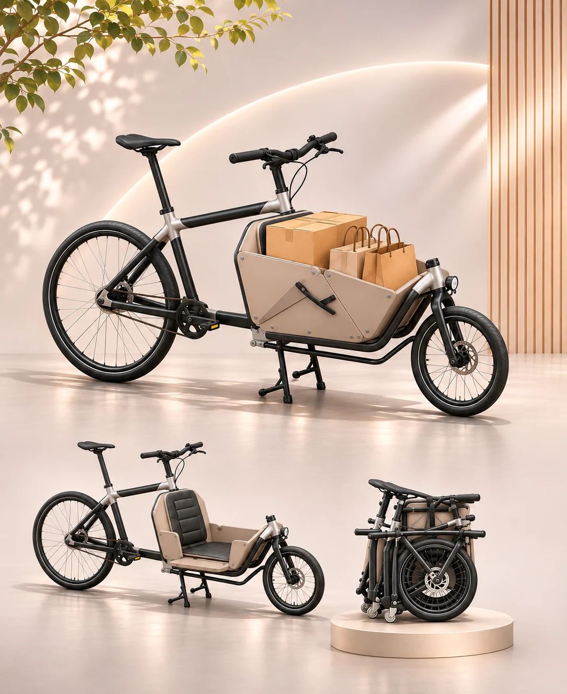

兒童座艙
單人座椅鎖固於車架，規劃多點式安全帶、四周護框與腳部擋板。載童功能待安全測試與法規審查。

以上皆為設計目標，尚未經樣車實測。
接送孩子、帶毛孩看診、採買，再回家停車，常常是同一趟行程。貨運自行車有空間，卻難停、難搬；折疊車好收，卻多半載不了孩子、寵物和大件物品。
Flip-Cargo E+ 把兩者放進同一台車：前艙可以換裝，車長依物品調整，整車可以收折。
點選型態，看同一台車如何對應出門、接送與回家。

產品概念圖。折疊機構與實際比例以樣車為準。
座艙、寵物艙與載物區共用車把前方的位置。
單人座椅鎖固於車架，規劃多點式安全帶、四周護框與腳部擋板。載童功能待安全測試與法規審查。

換上寵物艙，帶毛孩看診、散步或出遊，途中抬眼就能留意牠的狀況。

設計載物 20 kg，車長依物品調整。東西有沒有移位、掉落，騎著就看得到。

不必回頭，在意的都在眼前。
為都會親子與養寵家庭、微型物流和短程通勤族而設計。照片為情境示意，非本產品。


輪轂馬達搭配踏力感測，載物、載童時補上一份力。
40–50km
36 V／10 Ah，360 Wh。適合接送與採買。續航為設計目標。
續航尚未實測，會受載重、車速、坡度、助力模式與環境影響。

車架與折疊關節的候選材料：密度約為鋼的三分之一，好加工，可陽極處理，也能回收。
數值為母材典型值。焊接熱影響區強度會下降，不能套用上述數值，須依接頭與製程另行驗證。
| 項目 | 貨運自行車 | 折疊自行車 | Flip-Cargo E+ 設計 |
|---|---|---|---|
| 載童 | 前艙可加裝座椅 | 多無載童配置 | 前艙切換座艙（待驗證） |
| 載物 | 大容量固定前艙 | 小型前袋或後架 | 前艙載物，車長可調 |
| 停放 | 車身長，占空間 | 可進電梯與車廂 | 車架與前艙同步收折 |
| 電輔 | 多數配備 | 多為人力 | 250 W 輪轂馬達 |
全部是設計目標。結構分析尚未完成，性能以樣車實測為準。
| 車架材質 | 候選 6061-T6 鋁合金 |
|---|---|
| 整車重量 | 約 12 kg（不含電池） |
| 展開尺寸 | 約 160 × 70 × 100 cm |
| 折疊尺寸 | 約 80 × 60 × 40 cm |
| 前艙載物 | 20 kg |
| 輪胎 | 20 吋 × 2.0 吋 |
| 煞車 | 前後雙碟煞 |
| 馬達 | 250 W 輪轂馬達 |
|---|---|
| 最高時速 | 25 km/h |
| 變速 | 7 段 |
| 基礎電池 | 36 V／10 Ah（360 Wh） |
| 擴充電池 | 36 V／20 Ah（720 Wh） |
| 續航 | 基礎 40–50 km，擴充推估 80–100 km |
| 充電時間 | 4–6 小時 |
分析時假設騎乘者體重 70 kg，並非承載上限。整車總重上限待驗證。
兒童座艙仍在設計階段。完成安全測試與法規審查前，不視為已驗證的產品功能。
| 項目 | 設計方向 | 驗證方式 |
|---|---|---|
| 座椅固定 | 鎖固於艙底板與車架 | 拉拔與疲勞測試 |
| 安全帶 | 多點式，肩帶可調 | 錨點強度測試 |
| 前艙防護 | 四周護框與緩衝 | 擠壓與撞擊測試 |
| 腳部隔離 | 擋板與踏位隔開前輪 | 尺寸與實車檢查 |
| 煞車前傾 | 低置座艙、限制前衝 | 配重煞停測試 |
| 轉彎側翻 | 重心靠近中心線 | 配重轉彎測試 |
| 年齡體重 | 依法規訂定上限 | 法規查核 |
月份自專案啟動起算，實際時程取決於打樣、測試與審驗。
整車 CAD、座艙、鎖固與關節試作
配重、煞停、收折與續航驗證
依審驗結果進入小批製造
合作車店展示、試乘與維修
結構分析將涵蓋單人騎乘、前艙載物、兒童座艙、煞車與轉彎五種工況。
電池與耗損零件規劃可更換、可維修、可回收，對應 SDG 12 責任消費與生產。
接送、採買後收折停放，對應 SDG 11 永續城市與社區。
以電輔自行車替代短程燃油旅次，對應 SDG 13 氣候行動。
NT$49,800
規劃價格，產品尚未開放販售或預購。
個人：規劃官網預約，於合作車店展示、試乘與維修。
企業：規劃小量配送試營運，驗證車隊租賃。
售後：規劃電池健檢、相容配件與汰換回收。